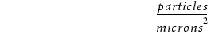

Defect densities are used when assessing the impact of random particle defects on yield. They are typically expressed in terms of unit per area, for example:

Critical area analysis requires that you know the defect densities for those ranges of particle sizes that are likely to be encountered during the manufacturing process. Taken together, the particle sizes and their associated densities is referred to as defect density data.
The easiest way to manage defect density data is through a defect density data file. In most cases, your foundry or process engineer provides you with a defect density file. Every foundry or IDM has their own defect data format, and many of them are encrypted prior to distribution.
The Calibre Critical Area Analysis tool accepts most encrypted data file formats. Critical area rule decks created using encrypted defect data are also encrypted, ensuring that defect data cannot be extracted from the generated code.
If you do not have foundry defect density data available, you can use the “CAA NDD Flow” to run Calibre CAA as a DFM scoring tool using the standard CAA flow without the requirement of foundry defect density data.